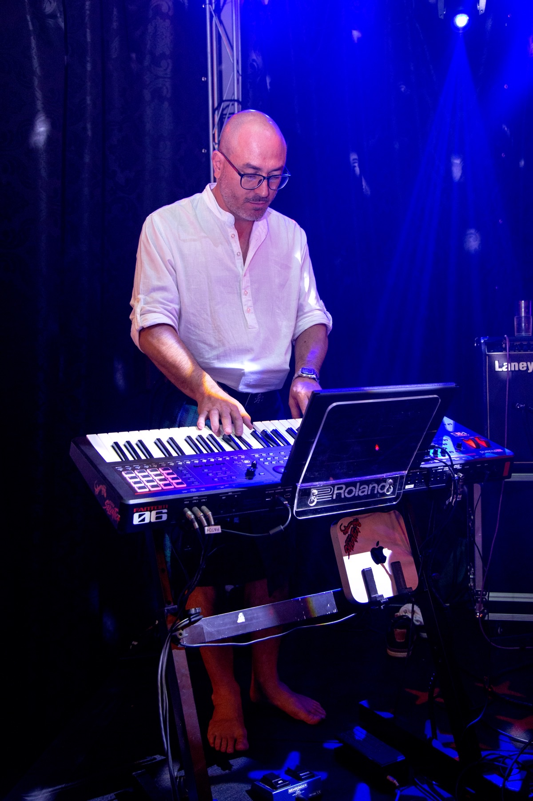
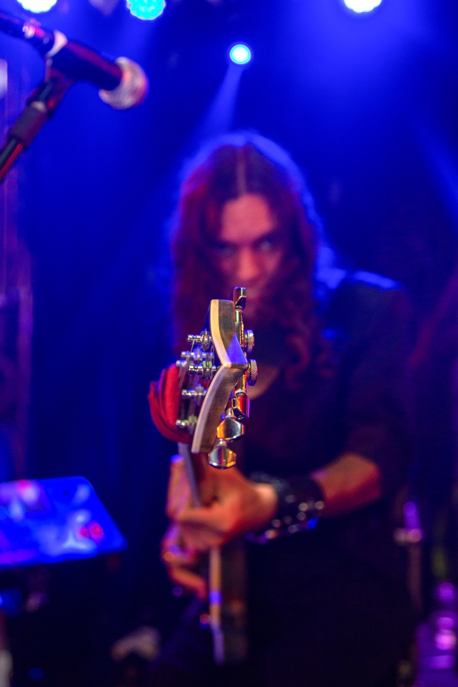
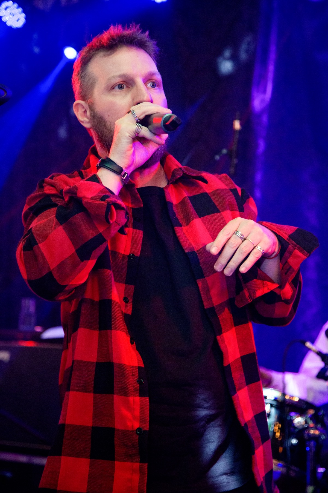
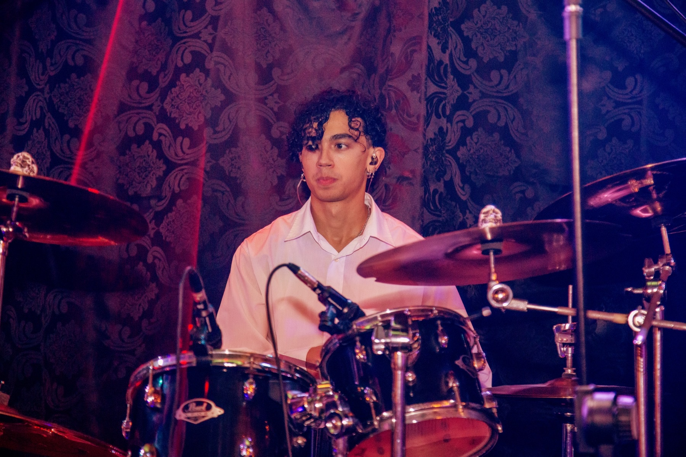
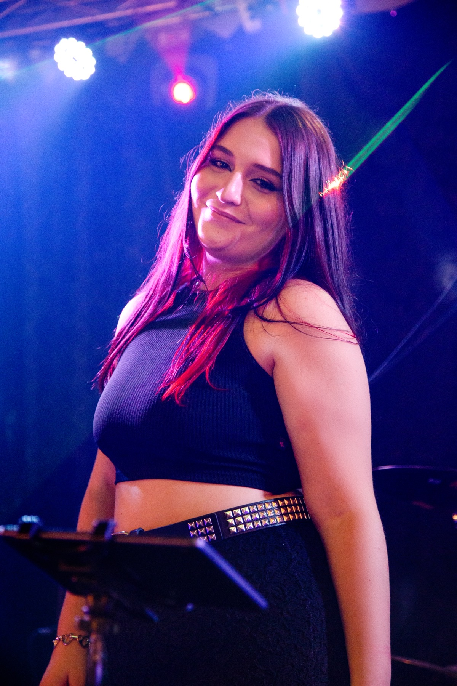

A sua festa.
A nossa energia.
Uma noite inteira.
Pop, Classic Rock, Flashbacks e Pop moderno para conectar gerações e celebrar os seus melhores momentos.
Planeje seu evento ↗
A sua festa merece ter o seu gosto musical.
Bom mesmo é ouvir aquela sequência de músicas que tem tudo a ver com você, certo? E, se a festa é sua, é assim que tem que ser.
Imagine sua celebração com a sua trilha sonora ao vivo.
A Banda Era Selvática veste o Classic Rock, o Pop atemporal e os Flashbacks que ninguém esquece. Aquele som que faz parte da sua história tem que fazer parte da sua festa.
A Era Selvática levará para o palco da sua festa um repertório com variedade, energia e conexão com a sua personalidade.
Escolha uma banda que combina com você. Escolha uma banda que gosta do que você gosta.

Do primeiro refrão ao último bis.
Pop para cantar junto. Classic Rock para sentir a energia. Flashbacks para reunir gerações. Pop moderno para movimentar a pista. Consulte o repertório disponível e a possibilidade de pedidos especiais.

Seu evento, seu ritmo.
Casamentos: uma proposta alinhada ao estilo do casal e dos convidados. Eventos corporativos: música para confraternizações, celebrações e encontros empresariais. Formação, duração e horários serão definidos na proposta.

Som e iluminação.
Solicite uma proposta com estrutura completa de som e iluminação. Equipamentos, equipe, montagem e logística serão dimensionados e confirmados conforme o espaço e o porte do evento.
Histórias para compartilhar.
Em breve, depoimentos reais de clientes e registros de suas celebrações.

VAMOS PLANEJAR SUA FESTA?
Seu evento começa
com uma boa conversa.
Fale direto com a Era Selvática pelo WhatsApp. Conte sua ideia, tire suas dúvidas e consulte a disponibilidade para sua data.
Sem formulário. É só chamar — vamos conversar sobre o seu evento assim que possível.
Antes de dar o play.
Quais cidades vocês atendem?
Campinas, Indaiatuba e região. Consulte disponibilidade e logística para seu local.
Como pedir um orçamento?
Informe data, cidade, tipo de evento e estimativa de convidados.
Posso pedir músicas especiais?
Compartilhe suas ideias. A inclusão será confirmada com a banda.
Som e iluminação estão inclusos?
Os itens inclusos serão definidos na proposta conforme as necessidades do espaço.
Como reservar uma data?
Disponibilidade e condições de reserva são confirmadas diretamente com a banda após o alinhamento da proposta.
Levamos esse som para a sua festa.
Campinas, Indaiatuba, Valinhos, Vinhedo, Paulínia, Jaguariúna, Hortolândia, Sumaré, Americana, Salto, Itu, Itupeva, Jundiaí, Tatuí, Sorocaba, Barueri, Osasco e região.
Seu evento será em outra cidade? Fale com a gente para consultar disponibilidade e deslocamento.